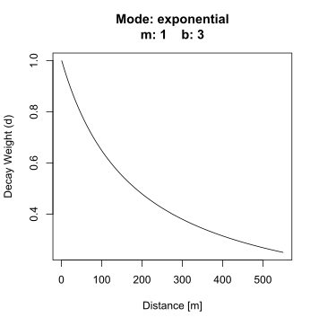

Visible Greenness Exposure Index - An example workflow for the City of Vancouver
In a previous posts I have introduced the Viewshed Greenness Visibility Index (VGVI) and demonstrated, how to fine tune the parameters for calculateing the viewsheds. In cooperation with Dr. S.M. Labib we have build the R package GVI, for easily calculating VGVI’s. The VGVI expresses the proportion of visible greenness to the total visible area and is calculated using a viewshed based on a Digital Surface Model (DSM). There are other methods to compute visible greenness, for example using Google Street View panorama images instead of a DSM (Li et al. 2015). Though the method we present has some advantages, as DSM and Landuse data is already being provided for public use for many regions worldwide. Furthermore, it is very easy to not only compute the overall visible greenness, but - for example - compute visible tree-coverage or visible blue-space. Such information is important to understand how specific build environment features affect health. I will demonstrate how to calculate visible tree-coverage in the end of this post.
On the GitHub website we have already provided examples on how to use the functions. However, a use case of this R package for researchers is to compute the VGVI for a large study area.
Therefore, in this post, I’d like to provide a workflow for a large area of interest, using the City of Vancouver as my study area.
Input
For computing the VGVI, we need three raster layers: the Digital Terrain Model (DEM) and Digital Surface Model (DSM) and a Greenspace Mask. The Greenspace Mask is a binary raster based on a Land Cover Classification map, where 1 = vegetation and 0 = no vegetation. I have also included bluespaces (e.g. lakes and rivers) to the greenspace mask with the value 1, since these features also seem to provide mental health benefits (White et al. 2021).
The data can be downloaded from Zenodo and read in R like this.
### Load libraries
library(terra) # handling raster data
library(sf) # handling shapefiles
library(GVI) # computing the VGVI
library(dplyr) # data wrangeling
# Folder where the data has been downloaded
workdir <- "H:/Vancouver/Vancouver_Sample_Data/"
# Load DTM, DSM and Land Cover
dtm <- rast(file.path(workdir, "Vancouver_DTM_1m.tif"))
dsm <- rast(file.path(workdir, "Vancouver_DSM_1m.tif"))
lulc <- rast(file.path(workdir, "Vancouver_LULC_2m.tif"))
# Reclassify values for the binary greenspace mask
rcl_mat <- matrix(c(1, 6, 0, # no vegetation
6, 13, 1, # vegetation and water
13, 14, 0), # no vegetation
ncol = 3, byrow = TRUE)
greenspace <- classify(lulc, rcl = rcl_mat, include.lowest = TRUE)
writeRaster(greenspace, file.path(workdir, "Vancouver_GS_2m.tif"))Below I have provided a interactive map of a smaller region, to compare the DTM, DSM and Landuse. In my other post I have also listed all classes of the Landuse map in detail.
We also need the observer locations where the VGVI should be computed. In our example we could simply use all coordinates of the whole DSM. However, we can’t compute the VGVI from inside buildings, and it wouldn’t make sense to compute VGVI on water (unless you are interested in the view of stand-up paddlers). Therefore, in the next step, we only use the coordinates of useful cells from the Land Cover Classification map and convert it to a sf-point feature.
# Useful Landcover Classification codes
useful_codes <- c(2:11, 13)
# Get XY-coordinates
xy_coords <- xyFromCell(lulc, which(values(lulc) %in% useful_codes)) %>%
as_tibble()
# Convert to shapefile
vancouver_2m_sf <- st_as_sf(xy_coords, coords = c("x", "y"), crs = 26910)
# Save sf
write_sf(vancouver_2m_sf, file.path(workdir, "Vancouver_2m_xy.gpkg"))Creating and writing the shapefile might take some time, as it contains 16.741.566 features. At this point I would recommend to restart the R session and clean the environment to free the RAM.
VGVI
Before computing the VGVI using the vgvi_from_sf function from our GVI R package, I would recommend to think about some important parameters. I have partially covered this in my last post, where I talked about the parameters raster_res and max_distance. So far, we have not provided recommendations for fitting the weights parameters m, b, and mode, because we need to conduct more research in this area. However, in our study area, m = 1 and b = 3, using the exponential function (see plot below) for calculating the distance decay weights seems sufficient.

Computing VGVI for a large area using multiple CPU cores can be RAM expensive. In addition to that, loading the complete Vancouver_2m_xy.gpkg shapefile into the R session is very RAM expensive, too. Therefore, I’ll make use of a SQL statement, to load the shapefile step by step. This way, the computation is more efficient and faster. Furthermore, by saving after every step, it is very easy to continue the script at the latest position in case of an unexpected system failure.
library(magrittr)
library(sf)
library(terra)
library(GVI)
options(show.error.messages = T)
# Set your cores here!
cores <- 22
# Set workdir
workdir <- "H:/Vancouver/Vancouver_Sample_Data/"
# Make dir for saving the VGVI output continuously
dir.create(file.path(workdir, "out"))
# Load raster data
dtm <- rast(file.path(workdir, "Vancouver_DTM_1m.tif"))
dsm <- rast(file.path(workdir, "Vancouver_DSM_1m.tif"))
greenspace <- rast(file.path(workdir, "Vancouver_GS_2m.tif"))
# Sequence for the SQL statement
sql_seq <- as.integer(seq(1, 16741566, length.out = 201))
for(i in 2:max(seq_along(sql_seq))) {
cat(paste0("Iteration ", i-1, "/", length(sql_seq)-1, ":\n"))
# Load shapefile with SQL statement
vancouver_sf <- st_read(
file.path(workdir, "Vancouver_2m_xy.gpkg"),
query = paste("SELECT * FROM \"Vancouver_2m_xy\" WHERE fid BETWEEN",
sql_seq[i-1], "AND", sql_seq[i]),
quiet = TRUE)
# Compute VGVI
vancouver_vgvi <- vgvi_from_sf(observer = vancouver_sf,
dsm_rast = dsm,
dtm_rast = dtm,
greenspace_rast = greenspace,
max_distance = 550, observer_height = 1.7,
raster_res = 2,
m = 1, b = 3, mode = "exponential",
cores = cores, chunk_size = 10000,
folder_path = file.path(workdir, "out"),
progress = TRUE)
cat("\n")
}I recommend to save the code from above in a separate R script (e.g. vgvi_Vancouver_2m.R) and call this script from the console. On Linux you can do this with the command:
sudo R CMD BATCH vgvi_Vancouver_2m.R &
This will run the R script in background and saves the output in a new file vgvi_Vancouver_2m.Rout. You can check the progress by calling cat vgvi_Vancouver_2m.Rout. In addition, I would recommend checking your CPU and RAM usage. I really like the htop tool for this!
VGVI to Raster
In most cases we prefer working with raster layers instead of millions of point features. Therefore, we will combine all the VGVI shapefiles from the previous step and convert them to a single raster (we will include this functionality in our package in the future). Also, I found it useful to smooth the final product by applying a moving window (focal) smoothing function.
library(magrittr)
library(sf)
library(terra)
library(raster)
workdir <- "H:/Vancouver/Vancouver_Sample_Data/"
# List all shapefiles in the out-folder
vgvi_paths <- list.files(file.path(workdir, "out"),
full.names = TRUE, pattern = ".gpkg")
# Load the Greenspace Mask
greenspace <- rast(file.path(workdir, "Vancouver_GS_2m.tif"))
pb = txtProgressBar(min = 0, max = length(vgvi_paths), initial = 0, style = 3)
for (i in seq_along(vgvi_paths)) {
# Convert shapefile to raster, the Greenspace raster will be
# used as a template for CRS and extent
this_rast <- terra::rasterize(terra::vect(vgvi_paths[i]), greenspace, "VGVI")
names(this_rast) <- "VGVI"
if (i == 1) {
terra::writeRaster(x = this_rast,
filename = file.path(workdir, "big_rast.tif"),
overwrite = TRUE)
} else {
terra::writeRaster(terra::merge(x = this_rast,
y = rast(file.path(workdir, "big_rast.tif"))),
filename = file.path(workdir, "big_rast.tif"),
overwrite = TRUE)
}
setTxtProgressBar(pb,i)
}
# Clean data
big_rast <- terra::rast(file.path(workdir, "big_rast.tif")) %>%
terra::classify(rcl = matrix(c(-Inf, 0, 0),
ncol = 3,
byrow = TRUE))
# Apply smoothing and write raster
big_rast %>%
terra::focal(3, fun = median, na.rm = TRUE) %>%
terra::mask(big_rast) %>%
terra::writeRaster(file.path(workdir, "big_rast_smooth.tif"))Tree-Coverage Visibility
As already mentioned in the beginning, it may be of interest to model visible tree-cover or visible blue-spaces or similar visibility assessments. Since we used a Landcover Classification map for differentiating between green vs. no-green, it is now very simple and straight forward to analyze visible tree-cover. As we did before, we need to classify coniferous and deciduous trees as 1, and the rest as 0.
rcl_mat <- matrix(c(1, 6, 0, # no trees
6, 8, 1, # coniferous and deciduous trees
8, 14, 0), # no trees
ncol = 3, byrow = TRUE)
tree_cover <- classify(lulc, rcl = rcl_mat, include.lowest = TRUE)Based on this new binary tree-cover mask, the Viewshed Tree-Cover Visibility Index (VTVI) can be calculated using the scripts from above. I have excluded observer locations that are underneath trees. Below you can see the result of the VGVI and VTVI. As you can see, they have not been computed for areas with buildings or water. In the VGVI layer you can also see, that cells which are located underneath trees have an extremely high VGVI value. This is because the viewshed algorithm can’t “see” beyond those trees and returns only one single visible cell, which is green. We are currently working on ways for solving this limitation.
When looking at the VTVI layer, higher values are rarely achieved because it is generally harder to view trees compared to overall vegetation. The Langara Golf Course in the south and the Little Mountain park in the north are the two areas with the highest VTVI values. The residential area in the east also achieved relatively high values. This might be explained by the very large London plane trees (Platanus × acerifolia), European beech trees (Fagus sylvatica) and horse chestnut trees (Aesculus hippocastanum) that have been planted in the side alleys.
Sebastian Brinkmann
BSc Student in Physical Geography
My research interests include spatial analysis, remote sensing, data science, urban forestry and epidemiology.